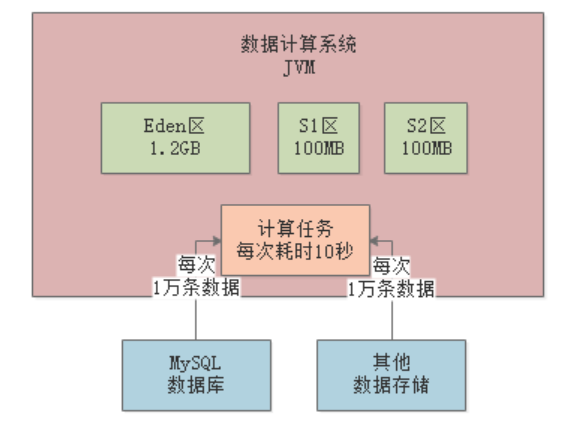
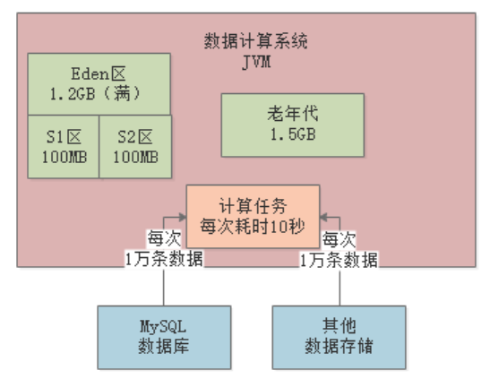
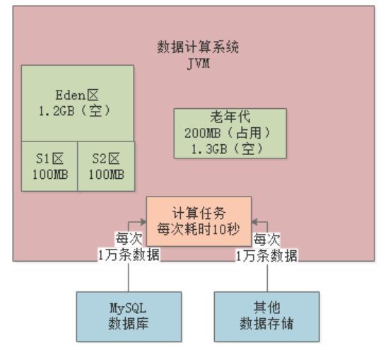
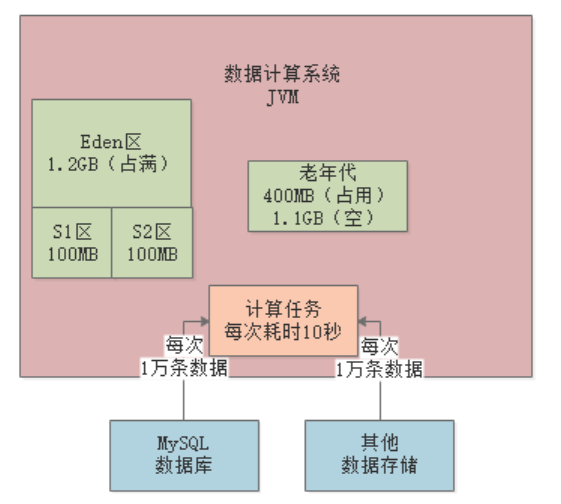
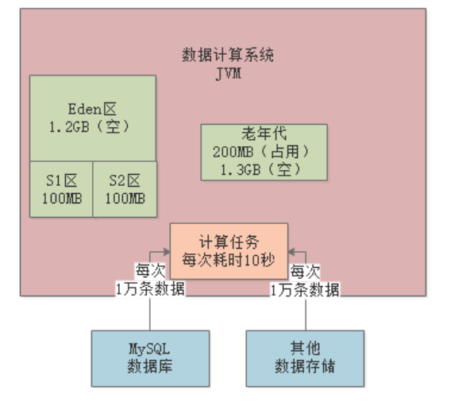

JVM实战（15）——Full GC调优
一、简介
本章将会讲解一个频繁Full GC的案例，示例来自于JVM基础篇中的亿量级计算系统。我们先来回顾下案例。
1.1 案例背景
假设现在生产环境有一套“数据计算系统”，不停地从MySQL等各类数据源提取数据到内存中进行计算，系统是分布式的。
每个节点（机器）每分钟执行100次操作（提取数据并计算，每次操作耗时10s），每次操作1万条数据，每条数据大小为1KB左右，每次操作的数据大小就是10MB：

每台机器的配置是4核8G，JVM分配4G内存，其中新生代1.5G，老年代1.5G。
1.2 内存使用模型估算
每次操作会在Eden区分配10MB对象，以1分钟100次操作来算，那么Eden区1分钟内就会被占满：

二、Full GC调优
每个计算任务处理1万条数据耗时10s，假设此时80个计算任务都结束了，还有20个计算任务共计200MB正在计算中，那么此时200MB对象是存活的，不会被Young GC回收掉：

2.1 扩Survivor
由于任何一块Survivor区只有100MB，所以新生代中这存活的200MB对象会晋升到老年代，然后清空Eden：

如此反复，大约经过7分钟后，也就是经历了7次Young GC，此时大概有1.4G对象在老年代中：

再经过1分钟，也就是第8分钟结束时，新生代又满了，此时发现老年代可用空间已经不足（剩余100MB），比历代平均的晋升对象大小（200MB）要小，所以会直接触发一次Full GC。
Full GC会先把老年代的垃圾回收了（假设能全部回收），然后执行一次Young GC，此时Eden区存活的对象会进入老年代：

按照这种情况，每隔8分钟左右就会发生一次Full GC。Full GC的性能是很差的，所以必须进行优化，最基本的优化思路就是扩大Survivor区的内存，比如扩到200MB。这样基本就能避免对象频繁进入老年代，将Full GC频率降低到几个小时一次。
2.2 采用大内存
上述的示例，是假设系统每天的负载是1亿请求，如果请求量再扩大十倍呢？
参照首节的内存使用模型来估算，每秒中会有100MB左右的数据进入Eden，那么Eden会在10s内就被塞满，触发Young GC。
计算任务本身就耗时10s左右，所以直接后果就是，即使进行了Young GC，可能也只能回收掉几百MB数据。那每隔10s，就有1G左右的数据进入老年代，那下一个10s又来1G数据，就会触发Full GC。最终的结果就是每分钟触发好几次Full GC，对于系统来说就是灾难。
所以，针对这个问题，首先要做的显然就是扩内存，比如换成16核32G的机器，Eden分配16G，Survivor各分配2G。那么按每秒加载100MB数据进内存来算，需要2分钟左右才会触发一次YoungGC，而每次Young GC的存活对象也就是几百MB，Survivor区足够容纳。这就避免了对象频繁进入老年代，触发Full GC。
那么，针对这种大内存的机器，我们是否需要用G1作为垃圾回收器呢？
对于本示例中的系统是不需要的，因为这种数据计算系统一般都是离线的，也就是说不和用户直接交互，所以哪怕每隔2分钟进行一次Young GC，每次Young GC耗时1s也没什么影响。